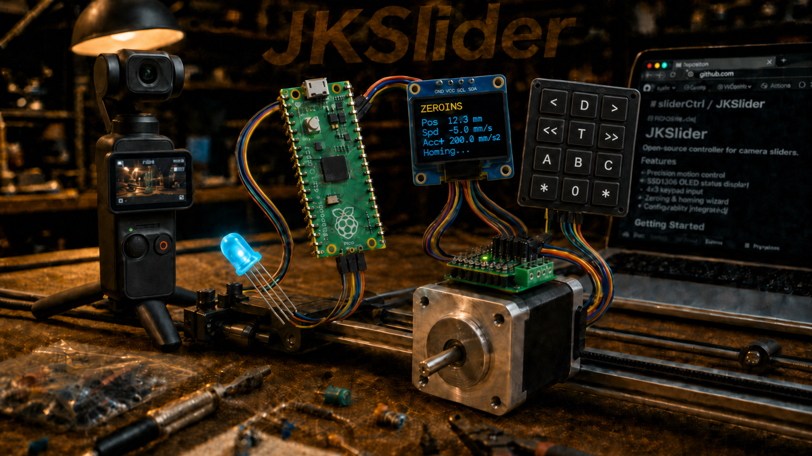
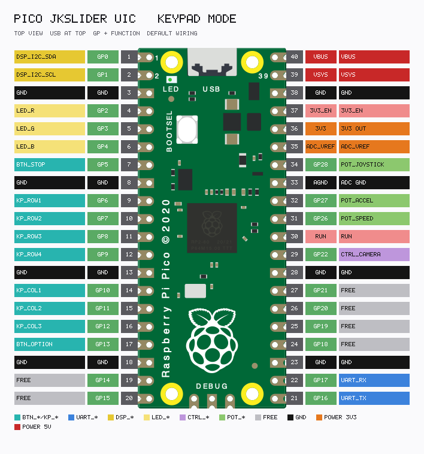

| Action | Key | Description |
|---|---|---|
| (MOVE_L / MOVE_R) tap ≤⅓s | < / > tap | Locked cruise at SPEED |
| (MOVE_L / MOVE_R) hold >⅓s | < / > hold | Hold-to-run; stop on release |
| Same MOVE tip while locked | < or > tip | Stop cruise |
| Opposite MOVE | < or > | Reverse immediately |
| OPTION + (MOVE_L / MOVE_R) hold | * (< / >) hold | Max speed + max accel boost |
| (FAST_L / FAST_R) hold | << / >> hold | Max speed/accel jog while held |
| Matching FAST while cruise | << or >> hold | Boost to max; release → pots |
| MOVE_L + MOVE_R hold ≥3s | < > hold ≥3s | Swap L/R |
| FAST_L + FAST_R hold ≥3s | << >> hold ≥3s | Swap L/R |
| STOP tap | 0 tap | Smooth stop |
| STOP tap while slowing | 0 tap | Fast halt |
| STOP hold ≥1s | 0 hold ≥1s | Fast halt |
| OPTION + STOP (both *) | * 0 * | Emergency halt |
| STOP + A | 0 A | Goto soft min |
| STOP + B | 0 B | Goto midpoint |
| STOP + C | 0 C | Goto soft max |
| OPTION + STOP + A | * 0 A | Homing |
| DELAY hold while moving | D hold | Soft-pause |
| DELAY release while paused | D release | Resume |
Tap ≤ JKS_MOVE_TAP_MS (333 ms) locks cruise; longer hold stops on release. Same MOVE tip while locked stops.
| Action | Key | Description |
|---|---|---|
| (A / B / C) tap | (A / B / C) tap | Goto at SPEED |
| (A / B / C) hold ≥1s | (A / B / C) hold ≥1s | Save PosA/B/C |
| OPTION + (A / B / C) tap | * (A / B / C) tap | Goto at max speed/accel |
| (A + B) / (A + C) / (B + C) | (AB) / (AC) / (BC) | Start/stop loop (2nd letter first) |
| OPTION + (A + B) / … | * + loop | Same loop (starts at 2nd letter) |
| A + B + C hold ≥1s | A B C hold ≥1s | Reset marks |
| OPTION + STOP (×1 / continuous) | * 0 | Peek PosA/B/C on OLED |
| Action | Key | Description |
|---|---|---|
| OPTION + FAST_L + FAST_R hold ≥1s | * << >> hold ≥1s | Dim LED + OLED (full ↔ 25%) |
| Action | Key | Description |
|---|---|---|
| STOP hold ≥2s | 0 hold ≥2s | Disable motor driver |
| STOP tap when disabled | 0 tap | Enable driver |
| OPTION + MOVE_L + MOVE_R hold ≥1s | * < > hold ≥1s | Swap L/R for MOVE, FAST, joystick |
| Control | Description |
|---|---|
| SPEED | Left → 0; right → faster (finer at low end). ~0 → Set SPEED, won’t start |
| ACCEL | How quickly the slider speeds up / slows down |
OLED mark ETAs (->B … s) follow both pots — dial SPEED to match a planned move time.
| Action | Key | Description |
|---|---|---|
| Centre | — | Stop |
| Deflect | — | Move; full = SPEED pot |
| While deflected | — | Overrides MOVE / FAST / loop |
| OPTION + joystick hold | * hold | Full deflection = max speed |
| OPTION + A + B + C hold ≥1s | * A B C hold ≥1s | Calibrate centre (stopped) |
| MOVE_L + MOVE_R hold ≥3s | < > hold ≥3s | Swap L/R incl. joystick |
| FAST_L + FAST_R hold ≥3s | << >> hold ≥3s | Swap L/R incl. joystick |
| Action | Key | Description |
|---|---|---|
| DELAY tap | D tap | Delay off |
| DELAY hold N s, release | D hold N s, release | Arm walk-in delay |
| DELAY hold | D hold | Preview while arming |
| OPTION + DELAY tap | * D tap | Arm preset (~5 s) |
| OPTION + DELAY hold | * D hold | Arm time ×5 |
| STOP tap (during wait) | 0 tap | Cancel wait (keeps Delay) |
| Action | Key | Description |
|---|---|---|
| TIMELAPSE tap | T tap | Cycle divider 1…100 |
| TIMELAPSE hold ≥1s | T hold ≥1s | Back to ×1 |
| OPTION + TIMELAPSE tap | * T tap | Divider +1 |
| OPTION + TIMELAPSE hold ≥1s | * T hold ≥1s | Favourite (often ×25) |
| OPTION + DELAY + TIMELAPSE | * D T | Toggle MSM ↔ continuous |
| OPTION + STOP (MSM, TL≠1) | * 0 | Cycle camera FPS |
TL×1 & continuous: CTRL_CAMERA high while moving / soft-paused; low when idle. OLED: MSM xN @Ffps / Cont xN @Ffps.
| Colour | Meaning |
|---|---|
| Rainbow | Power-on / unlock |
| Dim orange | Driver off |
| Dim white | Idle, ready |
| Dim cyan | Delay armed |
| Cyan blink | Delay wait / countdown |
| Dim magenta | Timelapse idle (TL ≠ 1) |
| White ↔ blue | Loop idle / dwell |
| Off (brief) | MSM shutter pulse |
| Yellow | Accel / decel |
| Green | Steady speed |
| +30% / 100% blue | Near / at soft limit |
| +10% blue | Loop running |
| Red fast blink | Hard limit |
| Red blink | Homing |
| Red | DRV_ERROR / E-stop |
| Red flash | Halt confirm |

UART to SliderMC @ 1 Mbaud (GP16/17 crossed). Handshake: UIC \n → MC welcome # … banner.